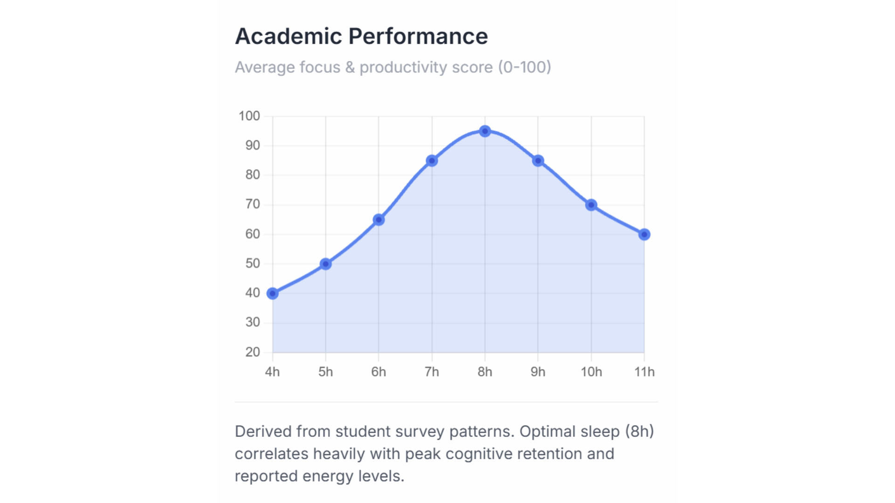
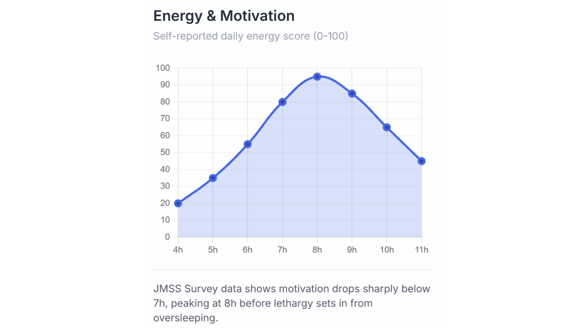

Sleep Duration vs Academic Performance

Academic performance was also analysed, with average productivity scores asked from students with differing amounts of sleep. We see an inverse-U shaped distribution, strongly linking better productivity to 7-9 hours of sleep.
Productivity decreases on either side of the graph, especially having less than 6 hours of sleep. Signalling that the lack of sleep and rest significantly impacts the brain's ability to focus. We see the graph drop off after 9 hours as well, possibly due to having higher amounts of sleep leading to students being late to classes, or not having enough time to study.

Based on JMSS sleep data, we can see that students' daily energy scores follow an inverse-U distribution, with the most optimal levels of sleep falling between 6 and 9 hours, with the most optimal being at 8 hours, and the least reported energy scores belonging to those with less than 6 hours of sleep.
This could be because sleep loss impairs your brain's emotional regulation, leading it to react excessively to negative stimuli. The same can be said for excess amounts of sleep (more than 9 hours), where lethargy takes over and you wake up groggy and sluggish.